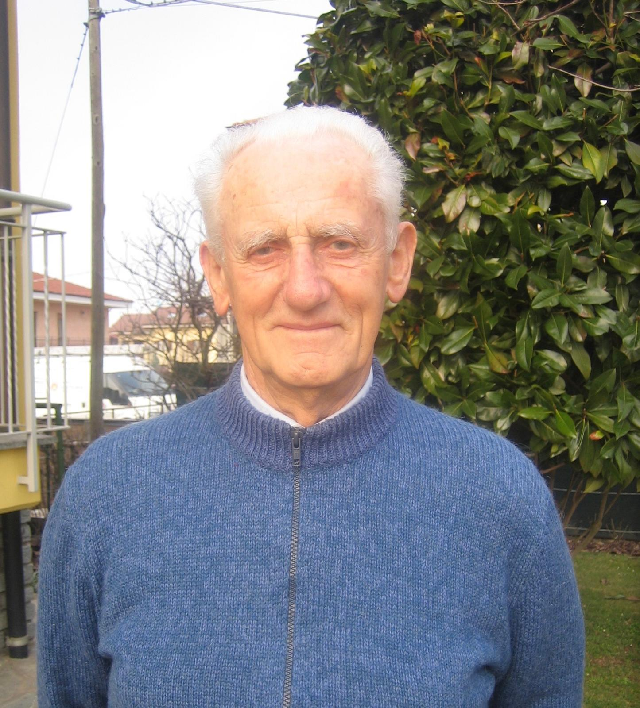

Testimonianza di Luigi Giorgis
sopravvissuto all'eccidio insieme all'amico Degiovanni Bartolomeo

Il testimone Luigi Giorgis
“La mattina del 2 febbraio alle ore 10.30 io mi trovavo sul piazzale di San Benigno con i miei amici, quando
all’improvviso abbiamo visto arrivare una moto-sidecar con una mitragliatrice sopra. Il tenente si è messo a
sparare in aria dicendo: "Tutti al muro! Tutti al muro!". Io mi sentivo tranquillo perché, avendo appena 18 anni,
avevo passato la visita militare ed ero stato dichiarato abile a fare il soldato, ma, essendo mio padre invalido,
avevo un foglio che documentava che non potevo essere mandato in Germania. Ho consegnato i documenti al tenente
che me li ha strappati davanti agli occhi e mi ha gridato: "Al muro!"" Ero l’ottavo della fila… Frezza ha
iniziato a urlare: "Vigliacchi, assassini! Cosa avete fatto questa notte? Avete ucciso Chicchiricchì".
"Siamo innocenti, noi non siamo partigiani, ma gente di campagna!". Frezza sulla porta dell’osteria,
rivolgendosi al soldato che stava dietro la mitragliatrice ha urlato:
"Levagli la sicurezza. Facciamo fuoco!"
qualcuno si è messo ad urlare, altri a piangere; io ero vicino a Bima che mi diceva: "Abbiamo solo
più da morire! Siamo già freddi!". Faceva molto freddo, non potevamo mettere le mani in tasca ed era
già da un’ora che eravamo lì al muro. Il tenente ha detto: "Sono ragazzi dal 17 al 25…" Allora io ho
guardato il mio amico Degiovanni che si trovava poco più in là e abbiamo detto: "Parliamo!... Parla
tu… Parla tu!!" Quando il tenente è passato davanti a me io tremavo tutto e non osavo di parlare,
allora Degiovanni con coraggio ha detto: "Signor tenente io sono del 26!" e Frezza ha risposto:
"Vai in chiesa!". Allora anch’io ho parlato e ho detto: "Signor tenente, anch’io sono del 26!".
Il tenente mi ha chiesto in quale giorno ero nato ed io ho risposto. E di rimando: "Va’, vigliacco!
Adesso sarai chiamato alle armi e se non ti presenti, ti fucilerò nel tuo letto!". Io sono partito
tremando e sono arrivato sul piazzale della chiesa dove c’era un soldato con il mitra che mi ha detto:
"Corri… che non ti prenda un’altra volta!" E aveva le lacrime agli occhi. Io non capivo e mi sono
fermato, non sono caduto, ma sono rimasto immobile… "Corri… corri…. corri!" Così mi sono salvato,
ma i miei amici sono rimasti uccisi e il funerale è stato fatto solo dopo la guerra.”"